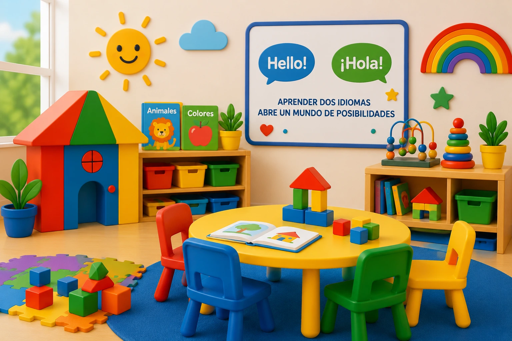

Cómo Elegir un Daycare Bilingüe en Connecticut
Elegir un daycare bilingüe es una decisión importante para las familias que desean que sus hijos crezcan en un ambiente donde puedan aprender, comunicarse y desarrollarse en más de un idioma. Además del idioma, también es esencial evaluar la seguridad, el cuidado, la comunicación y la calidad del programa educativo.

1. Evalúa cómo se integran los idiomas
Un buen programa bilingüe no solo traduce palabras. Integra ambos idiomas de manera natural en canciones, juegos, conversaciones, lectura, rutinas diarias y actividades educativas.
2. Observa el ambiente del aula
El espacio debe sentirse seguro, limpio, alegre y apropiado para la edad de los niños. Un ambiente bien organizado ayuda a que los niños se sientan tranquilos y preparados para aprender.
3. Pregunta sobre la comunicación con los padres
En un daycare bilingüe, la comunicación con las familias es clave. Los padres deben sentirse informados sobre el progreso, las rutinas, las actividades y el bienestar diario de sus hijos.
4. Considera el desarrollo cultural
Un ambiente bilingüe también puede fortalecer la identidad cultural de los niños. Escuchar y usar dos idiomas ayuda a valorar la diversidad, la familia y las diferentes formas de comunicación.
5. Verifica la seguridad y la licencia
Además del enfoque bilingüe, es importante confirmar que el proveedor cumpla con requisitos de licencia, protocolos de seguridad, supervisión adecuada y prácticas responsables de cuidado infantil.
6. Busca un equilibrio entre juego y aprendizaje
Los niños pequeños aprenden mejor a través del juego. Un buen daycare bilingüe combina actividades divertidas con experiencias que apoyan el lenguaje, la creatividad, la motricidad y las habilidades sociales.
Reflexión Final
Elegir un daycare bilingüe no se trata solamente de aprender dos idiomas. Se trata de encontrar un lugar donde tu hijo se sienta seguro, amado, comprendido y motivado a crecer con confianza.
¿Buscas un daycare bilingüe en Connecticut?
En Koinonia Fun Childcare ofrecemos un ambiente amoroso, seguro y bilingüe donde los niños aprenden inglés y español de forma natural mientras juegan, exploran y crecen.